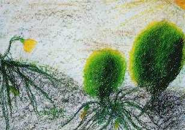

{kind=link}

Retourner au menu principal
 Tout ce qui arrive dans notre vie n'est peut-être qu'une sorte de déséquilibre entre le négatif et le positif. C'est la force négative au travail et nous devons la reconnaître. Nous avons donc un choix entre le négatif et le positif. c'est très simple. À chaque fois que nous pensons de façon négative, nous devons rétablir le contact avec le positif. À chaque fois que nous voulons parler de façon négative, recontactons le positif. À chaque fois que nous voulons haïr quelqu'un, réfléchissons-y à deux fois, et contactons l'amour parce que cela ne nous est d'aucune aide de haïr quelqu'un, n'est-ce pas ? Et nous pouvons jouir de toutes les richesses, de tout le luxe et de toutes les beautés que Dieu nous a accordées, mais nous devons nous souvenir du propriétaire. Nous devons nous souvenir de Dieu, oui ? Et Dieu nous est nous-même, notre nature la plus haute, rien de plus.
Le cactus Tien Shan
Pensez toujours de manière positive
Par conséquent, nous avons le choix de manière positive. Tout ce qui procure un bénéfice aux autres et à nous-mêmes au bon moment, c'est ce qui est positif. Et tout ce qui vous blesse et blesse les autres, c'est ce qui est négatif. Donc chaque fois, nous devons considérer ce qui est négatif et ce qui est positif, et c'est de cette manière que nous combattons. Et lorsque nous pensons toujours positivement, parlons positivement et aimons les autres, et agissons toujours d'une manière positive, ce qui veut dire convenable, au bon moment, et au bénéfice de nous-mêmes et des autres, c'est alors que nous faisons cause commune avec la force positive à un réservoir de pouvoir supplémentaire pour triompher de l'énergie négative dans le monde.
Donc, si nous avons davantage d'énergie positive dans ce monde, nous aurons plus de beauté, plus de fortune, non pas du point de vue de l'argent, mais en termes d'atmosphère et d'environnement, et nous aurons plus de facilité et réussirons d'avantage dans tout ce que nous faisons. Et si nous avons davantage de force négative, alors nous ajouterons davantage de désastres, de troubles, de guerres et de querelles entre voisins.
Nous avons le choix, ne pensons donc pas que le désastre ici où là n'est peut-être que le karma des gens, nous sommes aussi responsables. À chaque fois que nous pensons de manière négative, nous sommes responsables des désastres dans le monde, vous comprenez ? Ou nos voisins. Donc essayer de penser de façon positive tout le temps. Essayer d'aimer et d'être gentils et de contrôler vos pensées négatives. Je sais que vous savez cela, mais parfois vous oubliez d'en faire usage. C'est tout. Donc essayer de vous en servir davantage. Pensez de manière positive. Parlez de manière positive. Faites les choses avec amour. Pensez avec amour. À chaque fois qu'il existe une tendance négative, éteignez-la et ressaisissez-vous. C'est le seul moyen. Je n'ai pas d'autre secret. J'essaie de faire de même.
Parfois les désastres sont aussi bons pour nous, bons pour l'humanité. Oui, par exemple, ils apprennent à travailler ensemble, à se protéger mutuellement et partager les moments difficiles. Et le coeur des gens devient plus doux. Et la haine en vient à se dissoudre parfois entre des voisins qui entretenaient des malentendus. Et ainsi les victimes d'un désastre commenceront à réfléchir à la nature éphémère de la vie. Alors, ils commenceront à comprendre que la sécurité matérielle n'est pas la chose la plus fiable dont nous avons besoin. Regardez ces millions de foyers, en six minutes, cinq minutes, plus rien. Lorsque j'ai lu les journaux dernièrement, il y avait beaucoup de choses que j'ai trouvées très intéressantes. Par exemple, les médecins admettent à présent que les gens possédant une foi religieuse guérissent parfois bien mieux, ou ont au moins davantage de force pour endurer et accepter leur état de santé. Ils sont plus optimistes, plus gais parce qu'ils ont confiance en Dieu. Même s'ils ne voient pas Dieu comme nous le faisons et qu'ils ne voient pas Dieu qui les aide, ils ont toujours foi en Dieu, et cette foi les aide à supporter leur maladie et les médecins le savent à présent.
Aussi, au moment d'un désastre, quand les gens ont foi en Dieu, c'est comme ce feu ; certaines des victimes, parce qu'elles ont foi en Dieu, acceptent simplement ce qui est et se sentent mieux en elles-mêmes. Davantage d'acceptation sans trop de détresse. Mais la plupart des gens, en temps de désastre, subissent une sorte de choc et il leur faudra beaucoup de temps pour se rétablir.
Mais cela ne veut pas dire que nous n'aurons plus de désastre. Cela ne veut pas dire que nous n'aurons plus de maladie, parce que la majorité de l'humanité continue de se cramponner aux habitudes, même si un grand nombre d'entre eux savent que ce n'est pas bon pour eux. Aussi ont-ils probablement besoin de ce genre de choc pour les éjecter de leur rêve. Mais je n'aime pas ça. Je n'aime pas ça parce que c'est trop douloureux.
Par conséquent, nous essayons de minimiser leur douleur avec nos soins, en les réconfortant matériellement et en les aidant spirituellement. Sinon, pourquoi sommes-nous là ? À quoi servons-nous dans ce monde ? Si nous blâmons toujours Dieu pour tout et disons que c'est leur karma, que c'est leur mauvaise rétribution. Alors pourquoi sommes-nous là ?
C'est comme vos enfants, s'ils ont fait quelque chose de mal et qu'ils se blessent. Bien sûr, vous vous savez que c'est la conséquence de la mauvaise action de vos enfants. Mais, malgré cela, vous les aidez lorsqu'ils se blessent, lorsqu'ils sont blessés, lorsqu'ils sont malades, bien que cela soit dû à leur propre stupidité, à leurs propres actions. Malgré tout, nous les aidons et les aimons tout autant. N'est-ce pas ? Donc, de façon similaire, c'est aussi bon pour nous de pratiquer l'amour, la gentillesse et la compassion. Tout ce que nous faisons est pour l'ensemble des êtres, pas pour nous-mêmes.
Il semble que le monde s'améliore, partout. Mais cela paraît chaotique pour le moment. Pourquoi ? D'un côté, il semble que le monde aille mieux. Chaque pays a plus de liberté. Tous les pays limités sont ouverts à présent. Ils sont devenus plus libres. Et les peuples de différentes nations se sont rassemblés à présent. Les pires ennemis d'avant sont aujourd'hui amis. Ceci est très bon pour notre monde. Très, très bon. Mais pourquoi, pourquoi cela paraît-il si chaotique en même temps ? Qui le sait ?
C'est peut-être que le karma travaille plus vite pour eux afin qu'ils soient nettoyés. Dans le même sens, c'est comme lorsque vous voulez nettoyer toute la maison. Tout semble en désordre pour le moment, mais cela s'améliorera dans le futur. Ou parfois vous allez chez le médecin lorsque vous êtes malades, et il vous donne un médicament. Ensuite vient l'effet secondaire et votre état est pire qu'avant, semble-t-il, pour une très courte période, et ensuite vous allez mieux. C'est ainsi.
Je suis contente de vous informer qu'aucun de nos disciples qui vit dans cette région n'a eu le moindre problème. Je veux dire qu'aucune maison n'a été brûlée. Parce que nombreux parmi nous sont ceux qui vivent dans cette région, Santa Anna et tout ça. C'est donc bon pour vous. Vous devez aider une personne dans le besoin. Sinon, ce serait à vous que nous devrions apporter de la nourriture, des jouets et des couvertures.
De fait, si nous menons une vie très simple, il nous est plus facile d'aider les gens et de nous aider nous-mêmes et aussi nous tirons notre sécurité de notre pratique spirituelle. Nous n'avons donc jamais peur, que très rarement peur.
J'ai peur parfois, quand je rentre dans ce tube pour un examen médical. Cela ressemble à un tunnel, à un cercueil, au tunnel avant que vous retourniez dans ce monde qui sépare ce monde de l'autre monde, le tunnel de la vie et de la mort. Un long tube comme ça et c'est très bas. Et lorsque vous regardez, c'est juste devant votre nez, vous vous sentez enfermé. Mais pourtant je l'ai fait, je l'ai fait. Après la troisième fois, j'ai dit :"Ça y est. Je vais m'allonger ici et ce sera fini."
C'est normal d'avoir peur parce que c'est une habitude. Et parfois vous récoltez le sentiment de peur qui provient de l'atmosphère également. Ce n'est pas nécessairement vous-même. Parfois, à cause de la pratique et parce que nous devenons plus sensibles, nous la collectons d'autres personnes pour partager avec eux la difficulté, la peur ou le sentiment qui prévaut à cet endroit et à cet instant. Mais c'est la raison pour laquelle nous sommes là.
Néanmois notre peur n'est pas une véritable peur. Nous pouvons la conquérir, c'est la différence. Et nous savons comment le faire. Nous savons comment la conquérir. Mais nous sommes faits comme ça afin d'aider au nettoyage de la planète. Vous comprenez ? Chaque pratiquant Guan Yin partage la responsabilité de nettoyer la planète à un degré ou un autre.
Par conséquent lorsque vous méditez en groupe, vous ne le faites pas uniquement pour vous-mêmes, pour la libération de vos cinq générations, pour l'Amérique, ou votre famille. C'est pour la planète entière. Et plus de gens font ça, mieux c'est. Malheureusement, tout le monde ne réalise pas ça. Leur niveau ne leur permet que de penser au bénéfice immédiat. Il leur est donc parfois difficile de se joindre à nous dans la force de cette noble tâche.
Ce n'est pas que nous soyons indifférents. C'est difficile de penser aux autres parfois, mais c'est le karma. Nous devons donc être patients et attendre jusqu'à ce qu'un jour le karma soit épuisé et alors nous pouvons aider. Nous ne pouvons pas forcer le dénouement. Nous ne pouvons pas passer par dessus la tête du Seigneur du Karma pour ensuite faire ce que nous voulons, parce que ce n'est pas bon pour les gens.
Tout comme dans la famille, notre grand monde est ici comme une famille, et il existe des parents qui s'occupent de leurs enfants - de nous, comme des enfants. Ainsi celui qui est gentil, calme et bon sera récompensé afin qu'il se développe davantage et devienne un exemple lumineux à suivre par les autres. L'enfant méchant, méchant de façon répétée, les parents doivent faire quelque chose comme lui donné la fessée ou le priver de crème glacée pendant une semaine. Ainsi les enfants apprendront à mieux se comporter. Le Seigneur du karma est comme nos parents. Il représente le tout puissant le plus haut pour prendre soin des enfants ici. Il doit donc faire son travail. Comme les gens ne se souviennent pas du karma de leur vie passé, il leur arrive parfois de blâmer Dieu en disant : "Je fais le bien en cette vie. Je ne fais rien de mal et pourtant Vous brûlez ma maison. Ils oublient seulement ce qu'ils ont fait il y a trente ans, avant de naître, quelque chose comme ça, où ils ont été. Vous comprenez ce que je veux dire ? Il est très facile d'oublier ce que nous avons fait l'année dernière ; à plus forte raison au cours de la dernière vie, au cours de plusieurs vies.
Si vous venez à moi avec un genre de contrat, alors vous êtes bons pour une déception. Certaines personnes se méprennent sur nos motifs. Je ne vous ai jamais promis la richesse. Je ne vous ai jamais promis une vie de facilité, un lit de roses. Je ne vous ai jamais promis que vous obtiendrez ce que vous voulez, même quand c'est mal.
Ainsi nous pratiquons pour éliminer l'ego. Celui qui veut tout même quand c'est absurde, que ce n'est pas possible, qui veut toujours bousculer tout le monde pour le faire travailler pour lui, qui veut les choses pour rien, qui veut les choses sans travailler pour les obtenir, qui veut se servir en premier sans considérer si c'est correct ou incorrect en la circonstance. C'est l'ego. En plus, Dieu ne nous doit rien. C'est seulement pour nous, pour notre bien que nous devons méditer, que nous devons être bons parce que c'est bon pour nous!